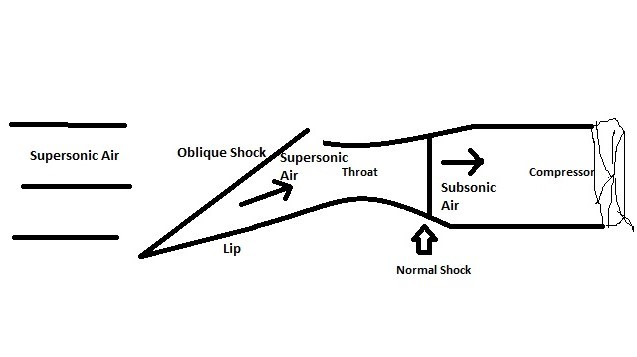

Supersonic Inlets for Turbofan Engines
Akash Patel
December 2017
Turbofan engines are primarily designed for subsonic aircraft. However, when used in supersonic aircraft, they require a specialized inlet system to manage the high-speed airflow. This is because compressors in turbofan engines cannot handle supersonic flow directly - it would cause them to stall due to shock waves and excessive back pressure.
The Role of Supersonic Inlets
Supersonic inlets serve a crucial function: they decelerate the incoming supersonic air to subsonic speeds (typically around Mach 0.5) before it enters the engine compressor. This is achieved through a series of shock waves within the inlet.
Key Components of a Supersonic Inlet
- Oblique Shock Generator: Usually a ramp or cone at the inlet entrance.
- Throat: The narrowest part of the inlet duct.
- Normal Shock Wave: Occurs after the throat or at the lip in some designs.
- Subsonic Diffuser: The expanding section after the normal shock.

Figure 1. Supersonic Inlet in Turbofan Engine
How It Works
- Oblique Shock: As supersonic air hits the ramp or cone, it creates an oblique shock wave. This initial shock reduces the air speed but keeps it supersonic (e.g., from Mach 2 to Mach 1.65).
- Throat: The airflow reaches its maximum at the throat, a phenomenon known as choking. The throat's size is critical in managing the airflow rate.
- Normal Shock: A strong shock wave perpendicular to the airflow occurs either at the throat or just after it. This shock reduces the air speed to subsonic levels (e.g., from Mach 1.65 to Mach 0.57).
- Subsonic Diffuser: The expanding duct after the normal shock further slows down the air before it enters the compressor.
Pressure Changes
- Static Pressure: Increases after each shock wave.
- Total (Stagnation) Pressure: Decreases after each shock wave, with a greater loss across the normal shock compared to oblique shocks.
External Compression Inlets
Some supersonic aircraft, like the SR-71 Blackbird, use external compression inlets. In these designs, the normal shock occurs at the lip of the inlet, which acts as the throat.
Inlet Unstart
If the normal shock moves ahead of the throat, it can cause an "unstart" condition. This reduces the inlet's efficiency and increases air spillage, potentially leading to engine performance issues.